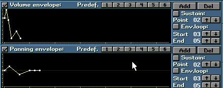
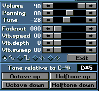
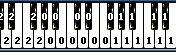
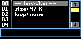

Envelopeの波形はマウスで各点をドラッグすることで編集できます。
横１ドットあたり１ｔｉｃｋに相当します。
ｗｉｎｄｏｗの画面全体でＢＰＭ１２５なら約６秒に相当します
Ｖｏｌｕｍｅ ｅｎｖｅｌｏｐｅ：
チェックを入れるとVolume envelopeが有効になります
Ｐａｎｎｉｎｇ ｅｎｖｅｌｏｐｅ：
チェックを入れるとPanning envelopeが有効になります
Predef.
波形をメモリーへ記録、読み出しを行います
各番号を右クリックで各番号に記録、左クリックで波形を読み出しします。
Ａｄｄ
波形の折れ線グラフの点の数を増やします
Ｄｅｌ
波形の折れ線グラフの点の数を減らします
Ｓｕｓｔｉｔｉｏｎ：
チェックを入れるとＳｕｓｔｉｔｉｏｎが有効になります
ｐｏｉｎｔ ｓｕｓｔｉｔｉｏｎを入れる場所を決めます
Ｅｎｖ．ｌｏｏｐ
チェックを入れると指定した範囲でEnvelopeがｌｏｏｐします
Start
ｌｏｏｐの起点となる場所を決めます
Ｅｎｄ
ｌｏｏｐの終点となる場所を決めます

Ｖｏｌｕｍｅ Ｐａｎｎｎｉｎｇ Ｔｕｎｅは各Sample毎に割り当てる事が出来ます
Ｖｏｌｕｍｅ
各SampleのＶｏｌｕｍｅを設定します
Ｐａｎｎｉｎｇ
各Sampleの左右の音の定位を設定します
Ｔｕｎｅ
各Sampleの音程を設定します
Ｆａｄｅｏｕｔ
ＮｏｔｅにＫｅｙＯｆｆが挿入された際のＦａｄｅｏｕｔの早さを設定します
Ｖｉｂ．ｓｐｅｅｄ
コマンドにVibratoが挿入された際の音の振動のスピードを設定します
Ｖｉｂ．Ｄｅｐｔｈ
コマンドにVibratoが挿入された際の音の振動の深さを設定します
Ｖｉｂ．Ｓｗｅｅｐ
コマンドにVibratoが挿入された際に実際にVibratoがかかるまでの時間を設定します
波形の設定
Vibratoの波形を設定します。左から正弦波、矩形波、三角波、逆三角波？になります。
Ｔｏｎｅ rｅｌａｔｉｖｅ ｔｏ Ｃ−４：
各Sampleの音の高さをＣ−４とした際の相対的な音の高さを設定します
Ｏｃｔａｖｅ ｕｐ
１オクターブ音程を上げます
Ｏｃｔａｖｅ ｄｏｗｎ １オクターブ音程を上げます
Ｈａｌｆｔｏｎｅ ｕｐ 音を半音上げます
Ｈａｌｆｔｏｎｅ Ｄｏｗｎ 音を半音下げます


ピアノに表示されている番号が各音程に割り当てられているサンプルです
右図のようにサンプルを選択して鍵盤をクリックすることで、割り当てることが出来ます。
なぜこういう操作が必要なのかというとサンプルの音程を変えるという操作はサンプル
の再生速度を変える事で実現しているので、音程を大きく変えるとどうしても音が不自然
になってしまいます。よって音程によってそれぞれサンプルを割り当てることでより
本物の楽器に近い音を出すことが可能になります
またドラムを打ちこむ際にも鍵盤にいろいろなサンプルを当てはめる事で操作が楽になるかも
しれません。
でもいつでもこういう操作が必要という訳ではなく曲のジャンルにもよりますがむしろされる場合
のほうが少ないでしょう。